In dem Register "Mitte" können die Belegzeilen erfasst bzw. editiert werden. Um was für eine Belegzeile es sich handelt wird dabei über die Spalte "Typ" definiert.
Hinweis
Weitere Informationen bezüglich des Erfassens von Belegen und den Buttons des Programms "Belegerfassen" sind dem Kapitel Belegerfassen zu entnehmen.
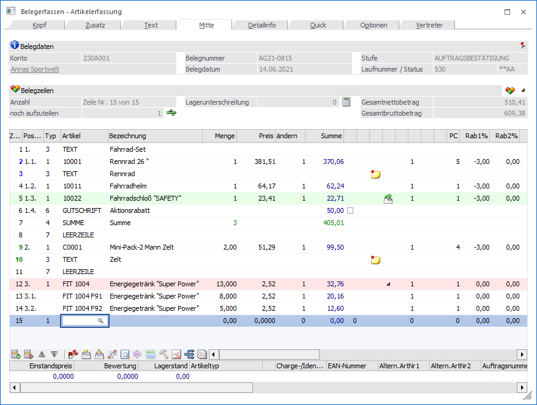
Folgende Eingabefelder und Information stehen zur Verfügung:
Belegdaten
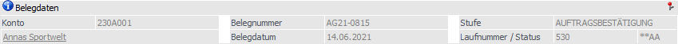
Ø Konto
An dieser Stelle wird die Nummer des Hauptkontos (WinLine START - Parameter - FAKT-Parameter - Belege - Allgemein - Option "Hauptkonto für Belege") des aktuellen Belegs angezeigt.
Ø Name
An dieser Stelle wird der Kontoname der Kontonummer dargestellt und das Fenster Kontoinformation kann direkt geöffnet werden.
Ø Belegnummer
An dieser Stelle wird die Belegnummer des Belegs angezeigt.
Ø Belegdatum
Hier wird das Belegdatum des Belegs dargestellt.
Ø Stufe
An dieser Stelle wird die Belegstufe des Belegs angezeigt. Wird ein Beleg in eine nachfolgende Belegstufe gewandelt, so wird hier die "Zielbelegstufe" dargestellt, die Laufnummer stammt hingegen noch vom "Ausgangsbeleg".
Ø Laufnummer/Status
Hier wird die Laufnummer, sowie der Staus des Beleges und dessen Folgestufen angezeigt.
Belegzeilen
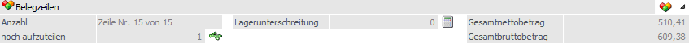
Ø Anzahl
An dieser Stelle wird die Gesamtanzahl der Belegzeilen aufgeführt und angegeben, in welcher Zeile sich befunden wird.
Ø noch aufzuteilen
An dieser Stelle wird die Anzahl der noch nicht ausgeprägten Hauptartikel, welche als "Hauptartikel mit Ausprägung" definiert wurden, angezeigt.
Ø zum nächsten aufzuteilenden Artikel wechseln
Bei Anwahl dieses Buttons wird zum nächsten Artikel des Typs "Hauptartikelartikel mit Ausprägungen" gewechselt, bei dem ein (weiteres) Ausprägen möglich und laut Aufteilungsoptionen auch erlaubt wäre.
Ø Lagerstandsunterschreitung
An dieser Stelle wird die Anzahl all jener Belegzeilen aufgeführt, welche den Lagerstand unterschreiten.
Ø verfügbarer Lagerstand
In der Tabelle "Belegzeilen" kann die Spalte "verf.Lagerstand" eingeblendet werden. Dort wird zunächst der Lagerstand angezeigt. Beim Betätigen dieses Buttons wird der Inhalt der Spalte zum erfassten Lieferdatum neu berechnet. Die Berechnung erfolgt erst ab der Belegstufe "Auftrag".
Hinweis - Artikel mit Lagerorten
Beim Verwenden des Lagermanagements werden in der Regel Bestände auf nicht verfügbaren Lagerorten von der verfügbaren Menge abgezogen. Ist dieses auch hier gewünscht, so muss in der Belegart bei der verfügbaren Menge die Option "3 - erlaubt mit Warnung (inkl. Lagerorte)" oder "4 - nicht erlaubt (inkl. Lagerorte)" hinterlegt sein.
Hinweis - Belegerfassung mit individuellen Vorlagen
Der Button steht bei den individuellen Vorlagen nicht zur Verfügung.
Ø Gutscheinbetrag
Sobald ein Gutschein in den Beleg übernommen wurde, wird die Information "Gutscheinbetrag" eingeblendet. Hier wird der Betrag aller übernommenen Gutschein angezeigt, wobei dieser Betrag in der weiteren Folge vom Zahlungsbetrag abgezogen wird und nicht vom Gesamtbetrag des Belegs.
Ø Gesamtnettobetrag / Gesamtbruttobetrag
Durch Aktivierung der Option "Gesamtbetrag" (Register "Optionen") werden die mitlaufenden Informationsfelder "Gesamtnettobetrag" und "Gesamtbruttobetrag" angezeigt.
Ø Artikel aus einer Merkliste einfügen
Bei Anwahl dieses Buttons wird das Fenster "Merkliste - Matchcode" geöffnet, aus welchem eine Merkliste gewählt werden kann. Dadurch werden alle Artikel der gewählten Merkliste in die Belegerfassung übernommen.
Ø alle Ausprägungen ein- bzw. ausblenden
Durch Anwahl dieses Buttons werden alle im Beleg befindlichen Ausprägungen ein- bzw. ausgeblendet.
Tabelle "Belegzeilen"
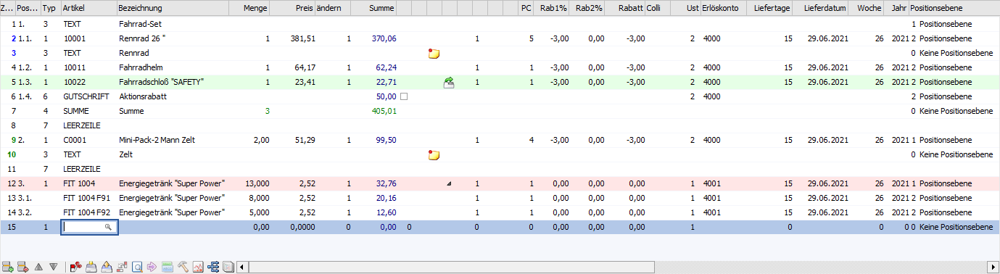
In der Tabelle werden Positionszeilen des Belegs erfasst. Neben der Variante die Artikel manuell zu erfassen gibt es die Möglichkeit Belegzeilen von bestehenden Belegen aus dem Menüpunkt "Belege" bzw. aus einer Belegzeilenliste (LIST-Liste) einfach mittels "Drag & Drop" in die Belegmitte zu übernehmen.
Hinweis
Neben den direkt angezeigten Spalten stehen viele optionalen Spalten zur Verfügung. Dieses können über das Kontextmenü der rechten Maustaste (Funktion "Spalten anzeigen/verstecken") in die Tabelle eingebunden werden.
Ø Zeilennr.
Jeder Erfassungszeile wird automatisch eine Zeilennummer zugeordnet. Durch eine unterschiedliche Farbgebung wird hierbei darauf hingewiesen ob Belegzeilen zusammengehören (blau bzw. grün) oder nicht (schwarz).
Hinweis
Handelt es sich bei der Artikelzeile um einen nicht expandierten Package-Artikel (entsteht z.B. durch einen Belegimport), so kann durch Drücken der F8-Taste der Package-Artikel "aufgelöst" werden, d.h. es werden dann die im Makro hinterlegten Artikel eingefügt (wie es auch bei der normalen Erfassung eines Package-Artikels passiert).
Ø Positionsnr.
An dieser Stelle wird die zu druckende Positionsnummer angezeigt. Dabei kann die Vergabe automatisch oder manuell erfolgen.
ü Automatischen Vergabe
Die
Option "Pos.nummern eingeben" (Register "Ausdruck") ist in der verwendeten
Belegart deaktiviert. Durch die dort ebenfalls hinterlegte Startpositionsebene
(Register "Ausdruck" - Option "Startpositionsebene") bzw. durch die Einstellung
"Standardpositionsebene" aus dem Artikelstammdaten (Register "Stamm") wird in
der Belegerfassung die Spalte "Positionsebene" (änderbar) mit einer Ebene
versehen und automatisch eine Positionsnummer generiert. Die Spalte
"Positionsnummer" ist in diesem Fall nicht manuell änderbar!
ü Manuelle Vergabe
Die Option
"Pos.nummern eingeben" (Register "Ausdruck") ist in der verwendeten Belegart
aktiviert. Dadurch kann in der Belegmitte das Feld "Positionsnummer" angewählt
und manuell eine Nummer vergeben werden. Die Eingabe erfolgt dabei nach dem
Schema #.#.#.#.#. , wobei # eine beliebige Zahl sein kann.
Die Sonderzeichen
"-" und "," sowie ";" werden nach der Eingabe automatisch durch "." ersetzt.
Auch die Vergabe des abschließenden Punktes erfolgt bei Nichteingabe
automatisch.
Hinweis
Wie bei der automatischen Vergabe kann über den Artikelstamm eine Standardpositionsebene vorgeben werden, welche in der Folge änderbar ist. Von einer Startpositionsebene lt. Belegartenstamm ist abzusehen.
Achtung
Bei der Eingabe der Positionsnummer erfolgt eine automatische Prüfung, ob die Nummer bereits vergeben wurde. Ist dieses der Fall, dann erscheint eine entsprechende Hinweismeldung, ob die Positionsnummer tatsächlich verwendet werden soll. Wird diese Abfrage mit "Ja" beantwortet können die Nummern mit Hilfe einer nachfolgenden Abfrage neu ermittelt werden. D.h. ab dem aktuellen Datensatz (= Startnummer für die neue Durchnummerierung) werden gemäß der Positionsebene alle darunterliegenden Belegzeilen neu durchnummeriert.
Hinweis
Wenn der Fokus in dem Feld "Positionsnr" liegt, können durch Anwahl der Taste F9 die Positionsnummern neu ermittelt werden. D.h. ab dem aktuellen Datensatz (= Startnummer für die neue Durchnummerierung) werden gemäß der Positionsebene alle darunterliegenden Belegzeilen neu durchnummeriert.
Ø Typ
Durch Eingabe eines Kennzeichens aus der Auswahlliste kann der Typ der Belegzeile definiert werden, d.h. es wird bestimmt, was in der Folge erfasst werden soll. Hierbei stehen folgende Typen zur Verfügung:
ü 1 - Artikel
Mit diesem Typ
können Artikel erfasst werden.
ü 2 - Makro
Mit diesem Typ können
so genannte Makros (werden unter "Stammdaten - Artikelstamm - Makros" angelegt -
z.B. "Rechnende Textbausteine") aufgerufen werden. Makros können einzelne
Artikel, Textbausteine und Makros zu einem Set verknüpfen.
ü 3 - Text
Mit diesem Typ können
"freie" Texte erfasst werden, wobei bereits angelegte Textbausteine (diese
können im Programmpunkt "Stammdaten - Artikelstamm - Textbausteine" angelegt
werden) mit dem Typ "2 - Makro" aufzurufen sind.
Hinweis
Angelegte Textbausteine werden nach dem Aufruf automatisch mit dem Typ "3 - Text" versehen.
ü 4 - Gesamtsumme
Bei diesem
Summentyp wird der bzw. werden die vorangegangenen Werte summiert und der
Summenspeicher der Summenwerte geleert.
ü 5 - Zwischensummen
Bei diesem
Summentyp wird der bzw. werden die vorangegangenen Werte summiert und der
Summenspeicher bleibt erhalten.
Beispiel zu Typ 4 und 5
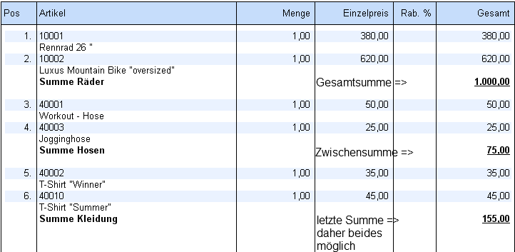
ü 6 - Gutschriften
Dieser Typ
kann zur Erfassung von wertmäßigen Gutschriften verwendet werden. Die Eingabe
des Betrags hat dabei positiv zu erfolgen und es muss das Erlöskonto angegeben
werden.
Zusätzlich gibt es bei diesem Zeilentyp die Spalte
"Summenrabattsperre". Je nachdem ob die Option aktiviert ist oder nicht, wird
diese Zeile bei der Berechnung des Summenrabatts berücksichtigt.
Hinweis
Eine Auswertung bzw. Berücksichtigung der Gutschriftzeilen kann über das Backlog erfolgen. Sie werden nicht an die Statistik übergeben.
ü 7 - Leerzeile
Mit diesem Typ
kann eine optische Leerzeile im Beleg eingefügt werden.
ü 8 - Seitenumbruch
Mit diesem
Typ kann ein Seitenumbruch beim Druck des Beleges erzwungen werden.
ü 9 - Nebenkosten
Dieser Typ
steht grundsätzlich nur bei der Erfassung von Einkaufsbelegen zur Verfügung und
dient z.B. zur Erfassung von Lagerwertkorrekturen. Wie bei dem Typ "1 - Artikel"
kann eine Menge * Preis eingegeben werden, wobei jedoch nur der GESAMTWERT der
Zeile gerechnet wird (d.h. es wird z.B. kein Lagerstand durch diese Zeile
verändert). Bei dem Druck der einzelnen Belegstufen werden dabei folgende
Aktionen durchgeführt:
ü Beim Druck von Lieferantenbestellungen werden Zeilen mit diesem Typ nicht berücksichtigt, d.h. es wird keine Dispozeile geschrieben.
ü Beim Druck von Lieferantenlieferscheinen wird für Zeilen mit diesem Typ eine Artikeljournalzeile mit Menge 0 geschrieben und der Lagerwert entsprechend korrigiert.
ü Beim Druck von Lieferantenfakturen werden Zeilen mit diesem Typ entsprechend in die Finanzbuchhaltung übergeben und eine Statistikzeile mit Menge 0 erzeugt.
Achtung / Hinweis
Folgende Funktionalitäten werden beim Typ "9 - Nebenkosten" wie bei "normalen Artikeln" des Typs "1 - Artikel" unterstützt:
ü Erfassen und manuelles Aufteilen von Ausprägungsartikeln in der Belegmitte
Folgende Funktionalitäten werden nicht wie bei "normalen Artikeln" unterstützt:
ü Bei Handelsstücklistenartikeln wird das Handelsstücklistenfenster nicht geöffnet und es werden keine Komponenten abgebucht.
ü Es werden keine Wareneinsatzbuchungen erzeugt.
ü Die Artikel, die mit diesem Typ erfasst werden, werden nicht reserviert.
ü Preise werden nicht zurückgeschrieben.
ü Der Etikettendruck (beim Belegdruck) wird für Zeilen des Typs "9 - Nebenkosten" nicht unterstützt.
ü Hauptartikel können mittels "Aufteilen"-Button in der Belegmitte nicht automatisch aufgeteilt werden.
ü Die Losgröße wird nicht automatisch erweitert.
Weitere Punkte zum Typ "9 - Nebenkosten":
ü Beim Kopieren eines Einkaufsbeleges auf einen Verkaufsbeleg werden Artikel des Typs "9 - Nebenkosten" in "normale" Artikelzeilen umgewandelt.
ü Im Batchbeleg können Nebenkostenzeilen nur bei Einkaufsbelegen importiert werden. Bei Verkaufsbelegen werden Nebenkosten in "normale" Artikelzeilen umgewandelt.
ü Beim Komprimieren von Artikeln im Sammelfakturendruck werden Nebenkosten NICHT komprimiert.
ü Hauptartikel des Typs "9 - Nebenkosten" können nachträglich NICHT im Menüpunkt "Lieferantenlieferungen aufteilen" aufgeteilt werden.
Ø Artikelnummer
An dieser Stelle kann eine Artikelnummer oder Makronummer (siehe Spalte "Typ") mit Hilfe des Matchcodes oder durch eine direkte Eingabe erfasst werden.
Hinweis - Ausprägungen
Wenn die Artikelnummer aus dem Ausprägungsfenster übernommen wird (d.h. ein Artikel mit Ausprägungen wurde über das Ausprägungsfenster erfasst), so wird im Feld "Artikelnummer" ein zusammengesetzter Text angezeigt, der sich - je nach Verwendung - aus Ausprägung1, Ausprägung2 und Chargen- / Identnummer ergibt. Die Artikelnummer selbst ist dann in der "Hauptzeile" ersichtlich.
Hinweise - Reservierungsartikel
Soll die Reservierung lt. Belegart manuell erfolgen, so kann ab Belegstufe "2 - Auftrag" bzw. "6 - Bestellung" bei Reservierungsartikel mit Hilfe der Taste F8 das zugehörige Reservierungsfenster geöffnet werden.
Hinweis - Ersatzartikel
Wenn ein Artikel mit Ersatzartikel erfasst wird, dann wird - je nach Einstellung im Artikelstamm (Register "Lager" - Einstellung "autom. Ersatz") - eine unterschiedliche Aktion ausgelöst:
ü 0 - nie automatisch
ersetzen
Der Artikel kann wie gewohnt bearbeitet werden. Sobald der
Tabellenbutton "Artikel ersetzen" angewählt wird, öffnet sich das Fenster
"Ersatzartikelnummer - Auswahl" aus welchem manuell ein Ersatzartikel gewählt
werden kann.
ü 1 - immer automatisch
ersetzen
Der erfasste Artikel wird automatisch durch den Ersatzartikel
ersetzt. Abhängig von der Artikelstammeinstellung "Verwendung" (Register
"Lager") der erste Artikel oder ggfs. auch ein kaskadierter Artikel
verwendet.
ü 2 - fragen
Nach Eingabe der
Artikelnummer wird folgende Meldung angezeigt:
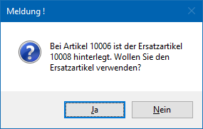
Wenn eine Ersetzung des Artikels vorgenommen wurde, so wird die ursprünglich (zuerst) eingegebene Artikelnummer intern ebenfalls abgespeichert und kann ggf. mit der Variable 26/89 angedruckt werden.
Hinweis - Artikelnummernänderung bei einem gedruckten Auftrag
Wenn die Artikelnummer bei einem bereits gedruckten Auftrag überschrieben wird, so erscheint immer (keine Festeinstellung möglich) die folgende Meldung:
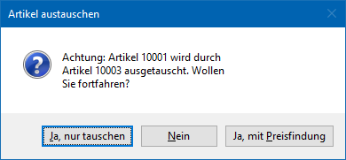
ü Ja, nur tauschen
Es wird nur
die Artikelnummer und die Bezeichnung ausgetauscht, der Rest bleibt wie erfasst
bestehen.
ü Nein
Es bleibt der bisherige
Artikel bestehen.
ü Ja, mit Preisfindung
Es wird
nicht nur die Artikelnummer und die Bezeichnung ausgetauscht, sondern es erfolgt
zusätzlich die Preisfindung. Dabei wird u.a. auch die
Ersatzartikelnummer/-bezeichnung neu geladen.
Ø Artikelbezeichnung
Die Artikelbezeichnung wird automatisch angezeigt und kann überarbeitet werden. Durch Drücken der F9-Taste, Anklicken der Lupe oder einem Doppelklick wird in das Register "Detailinfo" gewechselt, wo zusätzlicher Text hinterlegt werden kann.
Wurde als Zeilentyp "3 - Text" gewählt, so kann mit derselben Funktion ebenfalls in die Detailinfo gewechselt werden, um einen langen Fließtext zu erfassen.
Hinweis
Wenn im Artikelstamm des Artikels in der Bezeichnung nur ein * hinterlegt wurde, dann wird auf die Artikelbezeichnung nach Eingabe der Artikelnummer direkt der Eingabefokus gesetzt. Ansonsten liegt dieser auf dem Feld "Menge".
Ø Menge
An dieser Stelle wird die Menge des erfassten Artikels hinterlegt.
Hinweis - Formel
Wird in der Belegmitte mit Zeilenformeln gearbeitet und die Menge manuell korrigiert, so wird der Gesamtpreis nur automatisch geändert / aktualisiert, wenn mit der Funktion "RefreshValues" gearbeitet wird! Ansonsten muss nach dem Ändern der Menge die Zeilenformel per F9-Taste nochmals angestoßen werden.
Beispiel
Es wird ein Artikel mit der Menge 5 zum Preis von 10,- € erfasst. Die Summe wird mit 50,- € ausgewiesen.
Ist nun in der Artikelgruppe, welcher der erfasste Artikel zugeordnet ist, eine Zeilenformel ohne "RefreshValues" hinterlegt und wird die bereits erfasste Menge von 5 auf 10 geändert, so wird die Summe nicht aktualisiert! Mit der Funktion "RefreshValues" wird die Summe von 50,- € auf 100,- € geändert.
Hinweis - Ausprägungen
Wird ein Ausprägungsartikel erfasst und nicht aufgeteilt, der Beleg aber nochmals in derselben Belegstufe geladen, so kann das Fenster "Ausprägungen erfassen" mit der Taste F8 im Mengenfeld wieder geöffnet werden.
Hinweis - Kommissionierung
Wenn bei einer schon kommissionierten Artikel-Position im Belegerfassen die Liefermenge reduziert wird (d.h. eine Teillieferung der Auftragsmenge), dann erscheint folgende Meldung:
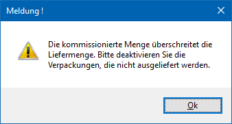
Anschließend wird das Fenster "Kommissionierung" geöffnet, in welchem alle zugehörigen Verpackungen angezeigt werden (nähere Informationen hierzu entnehmen Sie bitte dem Kapitel Abwahl von kommissionierten Verpackungen während Belegerfassens).
Ø Preis
An dieser Stelle wird der Einzelpreis des Artikels vorgeschlagen und kann editiert werden.
Voraussetzung
Die beim Personenkonto hinterlegte Preisliste ist ebenfalls im Artikel hinterlegt (Register "Preise" - Unterregister "Preise") und mit einem gültigen Preis versehen.
Hinweis - Preisinformation
Wenn der vorgeschlagene Preis nicht nachvollziehbar erscheint, dann kann durch Anwahl der Taste F8 im Feld "Preis" das Fenster Preisinformation geöffnet werden. In diesem Fenster werden alle beim Artikel hinterlegten Preise angezeigt und können in die Artikelzeile per Doppelklick oder Enter-Taste übernommen werden (auch wenn sie lt. Preisfindung nicht gültig wären).
Hinweis - Ausprägungen
Wurden Ausprägungsartikel erfasst und wird in der Hauptartikelzeile der Preis verändert, so wird dieser Preis nach einer Abfrage auf die einzelnen Ausprägungszeilen dupliziert.
Ø Ändern
Wird ein vorgeschlagener Preis editiert, so kann hier gesteuert werden, ob dieser in die Preisliste zurückgeschrieben werden soll oder nicht. Welche Option standardmäßig vorgeschlagen wird, ist abhängig von der Einstellung in den Fakt-Parametern und in der Belegart (Belegart übersteuert die Fakt-Parameter!). Folgende Optionen sind möglich:
ü 1 - kontenspezifische Preise nie
ändern
Wenn diese Option aktiviert wird, werden geänderte kontenspezifische
Preise nicht in die Preisliste zurück geschrieben.
ü 2 - kontenspezifische Preise immer
ändern
Wenn diese Option aktiviert wird, werden kontenspezifische Preise, die
im Beleg verwendet und geändert werden, in die Preislisten zurück
geschrieben.
ü 3 - alle Preise als
kontenspezifische Preise anlegen (Preis und Rabatt)
Wenn diese Option
aktiviert wird, werden alle geänderten Preise als kontenspezifische Preise mit
dem Preiskennzeichen "0 Preis und Rabatt" angelegt. Wenn es für den Artikel noch
keinen kontenspezifischen Preis gibt, wird ein Preislisteneintrag angelegt und
der Preis aus dem Beleg übernommen. Wenn ein Rabatt eingegeben bzw. geändert
wird, wird in der Preisliste das Kennzeichen "Rabatt in %" gespeichert. Wenn der
Rabatt nicht geändert wird, wird in der Preisliste das Kennzeichen "Rabattspalte
aus Artikelstamm" gespeichert. Wenn es für den Artikel schon einen
kontenspezifischen Preis gibt, wird dieser geändert, falls er im Beleg verwendet
wird.
ü 4 - alle Preise als allgemeine
Preise anlegen (Preis und Rabatt)
Wenn diese Option aktiviert wird, werden
alle vorhandenen Preise als allgemeine Preise mit dem Preiskennzeichen "0 Preis
und Rabatt" angelegt. Wenn es für den Artikel noch keinen allgemeinen Preis
gibt, wird ein Preislisteneintrag angelegt und der Preis aus dem Beleg
übernommen. Wenn ein Rabatt eingegeben bzw. geändert wird, wird in der
Preisliste das Kennzeichen "Rabatt in %" gespeichert. Wenn der Rabatt nicht
geändert wird, wird in der Preisliste das Flag "Rabattspalte aus Artikelstamm"
gespeichert. Wenn es für den Artikel schon einen allgemeinen Preis gibt, wird
dieser geändert, falls er im Beleg verwendet wird.
ü 5 - alle Preise als
gruppenspezifische Preise anlegen (Preis und Rabatt)
Mit dieser Option werden
alle geänderten Preise als gruppenspezifische Preise mit dem Preiskennzeichen "0
Preis und Rabatt" angelegt. Wenn es für den Artikel noch keinen
gruppenspezifischen Preis der entsprechenden Gruppe gibt, wird ein
Preislisteneintrag angelegt und der Preis aus dem Beleg übernommen. Wenn ein
Rabatt eingegeben bzw. geändert wird, wird in der Preisliste das Kennzeichen
"Rabatt in %" gespeichert. Wenn der Rabatt nicht geändert wird, wird in der
Preisliste das Kennzeichen "Rabattspalte aus Artikelstamm" gespeichert. Wenn es
für den Artikel schon einen gruppenspezifischen Preis der entsprechenden Gruppe
gibt, wird dieser geändert, falls er im Beleg verwendet wird.
ü 6 - alle Preise als
kontenspezifischen Preise anlegen (nur Preis)
Wird diese Option verwendet, so
werden angegebenen Preise als kontenspezifische Preise mit dem Preiskennzeichen
"1 Preis" angelegt. D.h. wenn es für den Artikel noch keinen kontenspezifischen
Preis gibt wird ein Preislisteneintrag angelegt und der Preis aus dem Beleg
übernommen. Wenn es für den Artikel schon einen kontenspezifischen Preis gibt,
wird dieser geändert.
ü 7 - alle Preise als allgemeine
Preise anlegen (nur Preis)
Bei Verwendung dieser Option werden alle
geänderten Preise als kontenspezifische Preise mit dem Preiskennzeichen "1
Preis" angelegt. D.h. wenn es für den Artikel noch keinen allgemeinen Preis
gibt, wird ein Preislisteneintrag angelegt und der Preis aus dem Beleg
übernommen. Wenn es für den Artikel schon einen allgemeinen Preis gibt, wird
dieser geändert, falls er im Beleg verwendet wird.
ü 8 - alle Preise als
gruppenspezifische Preise anlegen (nur Preis)
Wenn diese Option gewählt wird,
werden alle geänderten Preise als gruppenspezifische Preise mit dem
Preiskennzeichen "1 Preis" angelegt. D.h. wenn es für den Artikel noch keinen
gruppenspezifischen Preis der entsprechenden Gruppe gibt, wird ein
Preislisteneintrag angelegt und der Preis aus dem Beleg übernommen. Wenn es für
den Artikel schon einen gruppenspezifischen Preis der entsprechenden Gruppe
gibt, wird dieser geändert, falls er im Beleg verwendet wird.
Hinweis
Für Interessenten ist ein Ändern bzw. Zurückschreiben der Preise nicht möglich! Des Weiteren werden bei dem Zurückschreiben aus der Belegzeile auch die Felder "Ersatzartikelnummer" und "Ersatzartikelbezeichnung" in den Preiseintrag übernommen, wenn diese von der Artikelnummer und Artikelbezeichnung abweichend sind.
Ø Summe
An dieser Stelle wird die Summe der Belegzeile ausgewiesen und ist nicht editierbar.
Ø standardmäßige Spalten zwischen "Summe" und "PC"
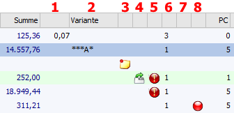
ü 1 - Menge 2 /
Summenrabattsperre
Diese Spalte steht bei den folgenden Belegzeilen zur
Verfügung:
ü Artikel, welche in 2 Mengen
geführt werden
Es wird die Menge 2 angezeigt, die sich lt. Einstellungen
automatisch errechnet, wobei der Wert allerdings erst ab der Stufe
"Lieferschein" verändert werden kann.
Hinweis
Wird dieser Wert verändert, so wird der Wert in der Spalte "Menge" nur dann neu errechnet, wenn es sich bei der Menge 2 um die Rückstandsmenge handelt.
ü Gutschriftszeilen
Bei
Belegzeilen des Typs "6 - Gutschrift" kann an dieser Stelle per Checkbox
definiert werden, ob der Gutschriftsbetrag bei der Summenrabattberechnung
berücksichtig werden soll.
ü 2 - Variante
Stehen für den
Artikel in der Zeile mehrere Varianten zur Verfügung (lt. Stückliste), so können
diese in der Spalte definiert werden.
Hinweis
Wurde im Artikelstamm ein Variantenvorschlag definiert, so wird dieser automatisch vorgeschlagen.
ü 3 - Notiz
Ist in einer Zeile,
in der Detailinfo eine Notiz bzw. ein Text hinterlegt, so wird dies in dieser
Spalte durch das Symbol angezeigt.
ü 4 - Hauptartikel mit Ausprägung / Aufteilung / Gutschein
Wird in dieser Spalte ein Symbol angezeigt, dann handelt es sich grundsätzlich um einen Hauptartikel mit Ausprägungen oder Lagerorten. Folgende Status-Symbole sind möglich:
ü - Ausprägen darf nicht erfolgen
Es
handelt sich um einen nicht ausgeprägten Hauptartikel und laut
Aufteilungsoptionen (WinLine FAKT - Ausprägungen - Aufteilungsoptionen) darf ein
(weiteres) Ausprägen nicht erfolgen.
ü - Ausprägen kann erfolgen
Es handelt sich
um einen nicht ausgeprägten Hauptartikel und laut Aufteilungsoptionen (WinLine
FAKT - Ausprägungen - Aufteilungsoptionen) kann ein (weiteres) Ausprägen
erfolgen.
ü - Ausprägen muss erfolgen
Es handelt sich
um einen nicht ausgeprägten Hauptartikel und laut Aufteilungsoptionen (WinLine
FAKT - Ausprägungen - Aufteilungsoptionen) muss ein (weiteres) Ausprägen
erfolgen.
Hinweis
Ein Druck des Belegs ist nicht möglich, wenn ein Artikel mit solch einem Status in der Belegmitte existiert.
ü oder - Ausprägungen ein- bzw.
ausgeblendet
Es handelt sich um einen ausgeprägten Hauptartikel und die
zugehörigen Ausprägungen werden ein- bzw. ausgeblendet, wobei eine Anwahl des
Symbols den Status entsprechend verändert.
ü - Automatische Aufteilung nicht komplett
durchgeführt
Wenn der Button "ohne Auswahl aufteilen" gedrückt wird und die
Aufteilung auf Ausprägungen oder Lagerorte konnte nicht / nicht komplett
durchgeführt werden, dann wird durch dieses Symbol darauf hingewiesen.
ü - Gutscheininfo
Handelt es sich um eine
Belegzeile, welche aufgrund einer Gutscheineinlösung entstanden ist, so wird
dieses Symbol angezeigt. Per Doppelklick kann der zugrunde liegende Gutschein
anzeigen werden.
ü 5 - Liefersperre /
Unterschreitung
Es wird mittels Symbol angezeigt, ob es sich um einen Artikel
mit Liefersperre (gültig bzw. aufgehoben) oder einer Unterschreitung handelt.
Für die Prüfung werden das Datum der Liefersperre im Artikelstamm und das
jeweilige Belegdatum herangezogen.
ü - Gültige Liefersperre
Es handelt es sich
um einen Artikel mit einer gültigen Liefersperre.
Hinweis
Per rechter Maustaste (Option "Liefersperre aufheben (xxxx)") kann die Liefersperre aufgehoben bzw. wieder aktiviert werden. Die Option greift jedoch nur auf die ausgewählte Zeile. Ist der Artikel mehrfach in dem Beleg vorhanden, so bleiben die Einstellungen diesbezüglich wie gehabt.
ü - Aufgehobene Liefersperre
Es handelt es
sich um einen Artikel mit einer aufgehobenen Liefersperre.
Hinweis
Per rechter Maustaste (Option "Liefersperre setzen (xxxx)") kann die Liefersperre wieder aktiviert werden. Die Option greift jedoch nur auf die ausgewählte Zeile. Ist der Artikel mehrfach in dem Beleg vorhanden, so bleiben die Einstellungen diesbezüglich wie gehabt.
ü - Unterschreitung der verfügbaren
Menge
Die verfügbare Menge des Artikels wird unterschritten und dieses ist
lt. Belegart nicht erlaubt (bzw. erlaubt mit Warnung).
ü - Unterschreitung des Lagerstands
Der
Lagerstand des Artikels wird unterschritten und dieses ist lt. Belegart nicht
erlaubt (bzw. erlaubt mit Warnung).
ü - Unterschreitung der
Produktionsmindestmenge
Die im Artikelstamm hinterlegte
Produktionsmindestmenge wird unterschritten.
ü 6 - Preisart
Diese Zahl zeigt
die Preisart an und ist nicht editierbar.
ü 7 - Reservierung
Das Symbol
in dieser Spalte zeigt an, dass
die angegebene Menge nicht vom Lager reserviert ist.
ü 8 - Lagerorte
In der Spalte
"Lagerorte" wird über den Status der Lagerorterfassung Auskunft gegeben:
ü - Rot
Die Menge der Belegerfassung wurde
bisher nicht auf Lagerorte aufgeteilt.
ü  - Orange
- Orange
Ein Teil der Menge der
Belegerfassung wurde nicht auf Lagerorte aufgeteilt.
ü  - Grün
- Grün
Die Menge der Belegerfassung wurde
auf Lagerorte aufgeteilt.
ü - Violett
Die aufgeteilte Menge ist
zumindest auf einem Lagerort nicht vorhanden. Grundvoraussetzung für diese
Prüfung ist die in der Belegart zu definierende Lagerstandsprüfung in der
Variante "5 - erlaubt mit Warnung (inkl. Lagerorte)" bzw. "6 - nicht erlaubt
(inkl. Lagerorte)".
Hinweis
Per Doppelklick auf das Kugel-Symbol kann das Fenster "Lagerorte erfassen" geöffnet werden.
ü 9 - Lieferantenstatus
Dieser
Spalte (steht nur bei Einkaufsbelegen zur Verfügung und zeigt den
Lieferantenstatus, d.h. die Priorität A, B, C, etc. welche beim gewählten
Lieferanten hinterlegt ist, an.
Ø PC
Hier wird der Provisionscode für die Vertreterabrechnung ausgewiesen.
Ø Rab1%/Rab2%
In die Felder "Rab1%" und kann "Rab2%" kann jeweils ein Zeilenrabatt hinterlegt werden. Dabei wird vom Einzelpreis zunächst der Rabatt 1 und anschließend der Rabatt 2 gerechnet.
Hinweis
Ein Rabatt muss im Minus erfasst werden, ein Zuschlag hingegen positiv.
Ø Rabatt
Hier wird der Gesamtrabatt der Belegzeile ausgewiesen und ist nicht editierbar. Hierbei handelt es sich allerdings nicht um eine reine Addition der Felder "Rab1%" und "Rab2%", sondern um den tatsächlichen mathematischen Wert.
Ø Colli
An dieser Stelle wird der Colli des Artikels dargestellt und kann geändert werden.
Hinweis
Bei Einkaufsbelegarten wird der "Colli Einkauf" und bei Verkaufsbelegen der "Colli Verkauf" aus dem Artikelstamm herangezogen.
Ø Ust
An dieser Stelle wird die Steuerzeile der Belegzeile ausgewiesen. Dadurch wird definiert, was für ein Steuer-%-Satz für den Artikel zu entrichten ist.
Ø Erlöskonto
Das Erlöskonto für die Übergabe an WinLine Finanzbuchhaltung stamm aus dem Artikelstamm und kann übersteuert werden.
Hinweis 1
Bei der Eingabe eines Erlöskontos erfolgt folgende Prüfung:
ü Verkaufsbelege
Es könnten nur
Konten mit dem Steuerkennzeichen "U" bzw. ohne Steuerkennzeichen verwendet
werden.
ü Einkaufsbelege
Es können nur
Konten mit dem Steuerkennzeichen "V" bzw. ohne Steuerkennzeichen verwendet
werden.
ü Sachkonten ohne
Berechtigung
Diese Option kann unter den FAKT-Parametern eingeschalten
werden. Ist diese Option aktiviert, so kann ein Benutzer auch Sachkonten
verwenden, auf welche dieser keine Berechtigung hat.
Wird in der Belegmitte ein Sachkonto mit einer Kostenart, welche den Verteilungsschlüssel im Bereich "Werte" (Kostenartenstamm im Programm KORE) geschlüsselt hat verwendet, dann wird diese Aufteilung für die Kostenrechnung mit im Buchungsstapel berücksichtigt. Welche Aufteilung verwendet wird, ergibt sich aus dem Belegdatum.
Hinweis 2
Ist in der Belegart eine Kostenstelle hinterlegt, so wird diese in einem solchen Fall nicht herangezogen, sondern die Verteilung.
Ø Liefertage/Lieferdatum/Woche/Jahr
An dieser Stelle wird das Lieferdatum aus dem Belegkopf (Register "Kopf" - Feld "Lieferdatum") eingetragen.
Achtung
Handelt es sich um einen Beleg der Stufe "2 - Auftrag" oder "6 - L.Bestellung", so wird bei der Ausgabe des Belegs die sogenannte "Disposition" gebildet. In die Disposition wird hierbei immer das Lieferdatum übertragen.
Ø Positionsebene
Durch die Eingabe einer Positionsebene kann die Positionsnummer der Belegzeile beeinflusst werden (nähere Informationen entnehmen Sie bitte der Beschreibung der Spalte "Positionsnr").
Ø Zwischensumme
An dieser Stelle kann hinterlegt werden, ob bzw. in welche automatische Zwischensumme der Wert der Belegzeile fließen soll. Diese Zwischensumme wird beim Rechnen des Belegs (z.B. durch Anwahl des Buttons "Belegvorschau anzeigen") automatisch erzeugt und ans Ende der Erfassungszeilen angefügt.
Hinweis
Sofern Zwischensummen in den Belegoptionen (WinLine FAKT - Stammdaten - Belegstammdaten - Belegoptionen - Register "Zwischensummen") definiert wurden, können diese auch mittels rechter Maustaste (Funktion "Hinzufügen zu Zwischensumme") hinterlegt werden.
Ø Ausgabe unterdrücken
Bei Aktivierung dieser Option wird der Wert (Betrag) der Zeile in der Endsumme des entstehenden Belegs berücksichtigt, aber der Artikel (die Belegzeile) selber nicht gedruckt.
Ø Alternativposition
Aus der Auswahlliste kann (abhängig vom Zeilentyp) gewählt werden, ob es sich bei der aktuellen Zeile um eine "normale" Zeile oder um eine Alternativposition handelt. Zur Auswahl stehen:
ü keine (immer mitrechnen)
So
gekennzeichnete Zeilen werden in der Belegsummenberechnung normal
berücksichtigt. Hierzu gibt es keine Alternative.
ü 0 - Standard
Die Zeilen mit
diesem Kennzeichen werden ebenfalls bei der Belegsummenberechnung normal
berücksichtigt und stellen die "Standardvariante" da.
ü 1-9
Alternativpositionen
Belegzeilen mit diesem Kennzeichen werden in der
Belegsummenberechnung nicht berücksichtigt und es werden keine Dispozeilen oder
Statistikzeilen geschrieben. Eine Übergabe an die Finanzbuchhaltung erfolgt
dadurch für solche Zeilen ebenfalls nicht.
Hinweise
ü Für eine entsprechende visuelle Anzeige auf dem Beleg sind Anpassungen am jeweiligen Belegformular vorzunehmen (siehe Angebotsformular "P02W41AP)
ü Eine Änderung dieses Kennzeichens ist nur bis zur Stufe "Auftrag" (vor dem erstmaligen Ausdruck) möglich.
ü Beim Umwandeln von Belegen in die Stufe "Lieferschein" werden die Liefermengen der Alternativpositionen auf 0 gesetzt. Am Lieferscheinformular werden Alternativpositionen generell nicht angedruckt.
ü Bei aufgeteilten Haupartikeln kann das Kennzeichen der Alternativposition nur bei dem Hauptartikel eingegeben werden. Diese wird auf die Ausprägungen "vererbt".
ü Beim Erstellen von Teillieferscheinen bzw. Sammelbelegen werden die Alternativpositionen nicht übernommen.
Ø Projektnummer
Hier kann für Belegzeilen des Typs "1 - Artikel" eine Zuordnung zu einem (Service-)Projekt durchgeführt werden.
Ø KSt./KTr.
An dieser Stelle kann für Belegzeilen des Typs "1 - Artikel", "6 - Gutschrift" und "9 - Nebenkosten" eine Zuordnung zu einer Kostenstelle und / oder einem Kostenträger erfolgen.
Ø Kostenart
Hier kann eine alternative Kostenart (die abhängig vom "Erlöskonto" vorgeschlagen wird) eingegeben werden, wobei keine "Umlage-" und "Plankostenarten" verwendet werden dürfen.
Hinweis
Das Feld "Kostenart" steht nur zur Verfügung, wenn in den FAKT-Parametern (Belege - Allgemein) die Option "Kostenart eingeben" aktiviert wurde.
Ø Artikelgruppe
In dieser Spalte wird die Artikelgruppe des Artikels zur Information ausgewiesen und ist nicht editierbar.
Ø Statistik
In jeder einzelnen Artikelzeile kann die Einstellung für die Artikelstatistik manuell verändert werden. Folgende Möglichkeiten stehen hier zur Verfügung:
ü A - lt. Artikelstamm
Es wird
die Statistikeinstellung gemäß des Artikelstamms verwendet.
ü B - keine Statistik
Es erfolgt
kein Eintrag in der Verkaufsstatistik.
ü C - Einzelzeilen
Die
Artikelzeile wird vollständig in die Verkaufsstatistik aufgenommen
(Detailinformation).
ü D - Summenzeilen
Alle Zeilen
mit diesem Statistiktyp werden zu Artikelgruppenwerten verdichtet (komprimierte
Verkaufsinformation).
ü E - nicht für Sollbestand
Diese
Einstellung steht nur für jene Artikel zur Verfügung, welche im Artikelstamm als
Sollbestand einen Wert "1 bis 12" (Durchschnitt der letzten x Monate) hinterlegt
haben. Wird dieser Eintrag gewählt, so wird die Statistik lt. Artikelstamm
geschrieben. Die Statistikzeile enthält hierbei jedoch ein eigenes Kennzeichen,
so dass diese nicht in der Sollbestandsberechnung beim Bestellvorschlag
berücksichtigt werden soll.
Ø Faktor1 bis Faktor3 (Bezeichnungen lt. Einstellung in den Belegoptionen)
In diesen Spalten werden die Werte der 3 möglichen Faktoren angezeigt. Diese können mittels Formeln befüllt bzw. manuell eingetragen und auch verändert werden.
Ø Einstandspreis
An dieser Stelle wird der aktuelle Einstandspreis des Artikels angezeigt. Dieser Einstandspreis wird bis zum Druck des Lieferscheins automatisch aktualisiert, durch den Druck des Lieferscheins dann festgeschrieben.
Hinweis
Soll mit einem fixen Einstandspreis gearbeitet werden, so kann der Einstandspreis manuell vorgegeben werden. Grundvoraussetzung hierfür ist die Aktivierung der Option "Einstandspreis ändern" (siehe Spalte "Einstandspreis ändern").
Ø Einstandspreis ändern
Wenn mit einem fixen Einstandspreis gearbeitet werden soll, so muss diese Option aktiviert werden. Anschließend kann in der Spalte "Einstandspreis" eine Eingabe erfolgen.
Ø Menge ausbuchen
Durch Aktivierung der Option "Menge ausbuchen" werden bei Lieferscheindruck eventuell vorhandene Restmengen (Auftrag / Bestellung mit 10 Stück, geliefert werden nur 8 Stück) aus dem Auftrag / der Bestellung entfernt.
Ø Lieferadresse
Mithilfe der Lieferadresse kann eine Belegzeile mit einem abweichenden Personenkonto (Konto, welches nicht auf inaktiv gesetzt wurde) versehen werden. Im Standard bleibt dieses Feld bei der Eingabe einer Artikelnummer leer. Es wird automatisch mit der Kontonummer der Lieferadresse (Register "Zusatz") gefüllt, wenn der Beleg gespeichert wird. Eine Anpassung der Lieferadresse im Register "Zusatz" bewirkt, dass diese Kontonummer dann in alle Zeilen des Belegs übernommen wird.
Hinweis
Wenn die Lieferadresse über die FAKT-Parametereinstellung als Hauptkonto definiert worden ist, werden diese Angaben beim Speichern in die Zeilen übernommen, welche zuvor keinen Eintrag erhalten haben.
Achtung
Wurde die Lieferadresse in den FAKT-Parametereinstellungen als Hauptkonto für Belege definiert, so führt eine Anpassung der Rechnungsadresse im Register "Zusatz" dazu, dass die Kontonummer der Lieferadresse aus dem Register "Kopf" in alle bestehenden Zeilen des Belegs übernommen wird.
Ø Lagerstand nicht buchen
Wenn der Lagerstand eines Artikels durch den Verkauf oder Einkauf nicht verändert werden soll, dann kann dieses durch Aktivierung der Option "Lagerstand nicht buchen" realisiert werden.
Hinweis
Die Option "Lagerstand nicht buchen" war ursprünglich nur für negative Mengen gedacht. Bei Eingabe einer
Teilliefermenge (= weiterhin positiver Wert) und gesetzter Option, wird eine Warnung ausgegeben und gefragt, ob das Kennzeichen behalten werden soll.
Ø Artikelgewicht
Diese Spalte wird standardmäßig mit dem Gewicht aus dem Artikelstamm befüllt und kann editiert werden.
Ø Vertreter
An dieser Stelle wird der Vertreter für die Provisionsabrechnung ausgewiesen. Dieses Feld wird automatisch befüllt, wenn im Register "Zusatz" der Vertreter angegeben wird, bzw. bei Änderung dieser Angabe der "Pfeil"-Button daneben gedrückt wird (damit wird der geänderte Vertreter in die Belegzeile übernommen). Wird lt. Belegart eine Vertretervorlage verwendet, so wird dieses Feld lt. Vertretervorlage befüllt (nähere Informationen entnehmen Sie bitte dem Kapitel "Vertretervorlagen").
Ø Bezugskosten
An dieser Stelle können die Bezugskosten des Artikels erfasst bzw. geändert werden. Die Spalte steht entsprechend nur bei Belegen des Typs "Einkauf" zur Verfügung.
Hinweis
Die Bezugskosten dienen nur zur korrekten Darstellung / Berechnung des Einstandspreises und werden bei der Summenberechnung des Belegs bzw. bei der Übergabe an WinLine Finanzbuchhaltung nicht berücksichtigt.
Ø Positionstext
An dieser Stelle kann ein weiterer Text (100-stellig) hinterlegt werden.
Ø Verf.Lagerstand
In dieser Spalte wird zunächst der Lagerstand des Artikels ausgegeben. Durch Anwahl des Buttons "verfügbarer Lagerstand" (siehe Bereich "Belegzeilen") wird der verfügbare Lagerstand, bezogen auf das Lieferdatum, angezeigt.
Ø Bestellmenge
Hier wird bei Belegen der Belegstufe "3 - Lieferschein" und "7 - L.Lieferschein" die Bestellmenge lt. der zu Grunde liegenden Aufträge / Bestellungen angezeigt.
Ø bereits geliefert
Hier wird bei Belegen der Belegstufe "3 - Lieferschein" und "7 - L.Lieferschein" die bereits gelieferte Menge lt. der zu Grunde liegenden Aufträge / Bestellungen und möglicher Teillieferscheine angezeigt.
Ø Ersatzartikelnummer/Ersatzartikelbezeichnung
In diesen Spalten werden die kunden- bzw. lieferantenspezifische Artikelnummer und Bezeichnung aus dem genutzten Preislisteneintrag angezeigt und können editiert werden. Dabei gilt folgende Logik:
ü Wenn der Artikel eingegeben wird, werden die Felder mit der Artikelnummer und -bezeichnung aus dem Artikelstamm belegt.
ü Sobald die Preisfindung durchgeführt wird, werden die Felder mit den Werten aus der Preislistentabelle belegt, sofern diese gefüllt sind.
ü Damit ist gewährleistet, dass die Variablen immer belegt sind, und damit können am Beleg generell diese Variable angedruckt werden kann, auch wenn in der Preisliste kein Eintrag vorhanden ist.
ü Wenn eine manuelle Nummer eingegeben wurde, und die Preisfindung durchgeführt wird, wird diese wieder wie beschrieben geändert.
Diese Logik betrifft…
ü das Erfassen eines Artikels im Belegerfassen.
ü das Durchführen der Preisfindung im Belegerfassen (z.B. durch Ändern der Menge auf 0 + Eingabe einer abweichenden Menge).
ü die Preisfindung in der Belegumstellung.
Hinweis
Ist dieses Verhalten nicht gewünscht, dann kann der mesonic.ini-Eintrag…
[Ersatzartikel]
Replace = 0
… gesetzt werden. Dadurch wird immer der Eintrag aus der Preisliste verwendet:
ü Beim Erfassen des Artikels wird die Ersatzartikelnummer nicht mit der Artikelnummer vorbelegt.
ü Bei der Preisfindung wird die Ersatzartikelnummer immer mit der aus der Preisliste belegt, auch wenn dort keine vorhanden ist, d.h. ggf. wird eine manuell eingegebene Nummer mit <LEER> überschrieben.
Ø Bewertung
An dieser Stelle wird der Bewertungspreis des Artikels dargestellt, welcher in der Folge zur Berechnung des Rohertrags dient. Die Herkunft des Bewertungspreises wird im Artikelstamm (Register "Lager", Unterregister "Einstellungen", Option "Basis für Rohertrag") definiert.
Der Bewertungspreis wird bis zum Druck des Lieferscheins automatisch aktualisiert, durch den Druck des Lieferscheins dann festgeschrieben
Hinweis
Soll mit einem fixen Bewertungspreis gearbeitet werden, so kann der Bewertungspreis manuell vorgegeben werden. Grundvoraussetzung hierfür ist die Aktivierung der Option "Bewertung ändern" (siehe Spalte "Bewertung ändern").
Ø Bewertung ändern
Wenn mit einem fixen Bewertungspreis gearbeitet werden soll, so muss diese Option aktiviert werden. Anschließend kann in der Spalte "Bewertung" eine Eingabe erfolgen.
Ø statistische Wert
An dieser Stelle wird der fixe statistische Wert für die ATLAS- bzw. Intrastatausgabe angezeigt, wenn die Option "statistische Wert ändern" aktiviert wurde. Ist die Option nicht aktiviert, so wird "0,00" ausgewiesen.
Ø statistische Wert ändern
Wenn mit einem fixen statistischen Wert gearbeitet werden soll, so muss diese Option aktiviert werden. Anschließend kann in der Spalte "statistische Wert" eine Eingabe erfolgen. Zusätzlich wird bei Aktivierung der Option der allgemeine statische Wert der Zeile abzüglich Summenrabatt in der Spalte "statistische Wert" vorgeschlagen.
Hinweis
Standardmäßig werden Summenrabatte bei einer ATLAS- bzw. Intrastatausgabe nicht berücksichtigt, da nur Rabatte berücksichtigt werden dürfen, welche eindeutig einzelnen Artikeln zugewiesen werden können.
Ø Bestätigtes Lieferdatum (Bezeichnungen lt. Einstellung in den Belegoptionen)
Dieses Feld steht zur Eingabe eines weiteren Datums (zusätzlich zum Lieferdatum) zur Verfügung. In weiterer Folge kann dieser Wert z.B. im Backlog oder in der Lieferantenmahnung ausgewertet werden.
Hinweis
Dieses Datum steht in den Batchbelegvorlagen zum Im- bzw. Export zur Verfügung, wird aber beim Kopieren von Belegen gelöscht.
Ø Sofort
In Belegen des Typs "Einkauf" steht die Option "Sofort" zur Verfügung. Durch Aktivierung wird das Feld "Bestätigtes Lieferdatum" (Bezeichnungen lt. Einstellung in den Belegoptionen) gesperrt, d.h. die Ware wird zum definierten bzw. vorgegebenen Lieferdatum angeliefert.
Ø Sperre
Ab der Belegstufe "Auftrag" kann mit dieser Option einzelne Belegzeilen für die weitere Bearbeitung (Änderung) gesperrt bzw. entsperrt werden, wobei ab der Stufe "Lieferschein" ein Editieren der Liefermenge weiterhin gestattet wird.
Hinweis
Die Änderung dieser Option kann nur von WinLine Benutzern des Typs "Administrator" oder mit der Administratorenberechtigung "Datenadministrator" vorgenommen werden.
Ø Teilliefersperre
Dieses Kennzeichen unterbindet die Möglichkeit bei Lieferscheinen Teillieferungen für eine Artikelzeile durchzuführen. Die Grundeinstellung wird aus dem Belegkopf (Register "Kopf" - Feld "Teilliefersperre") übernommen, kann aber pro Zeile übersteuert werden.
Ø VP1, VP2, VP3
In diesen Spalten können die Verpackungsarten angegeben werden. Sofern ein Colli verwendet wird, welcher Verpackungsarten hinterlegt hat, werden diese hier vorbelegt.
Ein Editieren der Spalten ist nicht mehr möglich, sobald Kommissionierungen vorhanden sind, unabhängig davon ob für den Auftrag bereits eine Packliste im Originaldruck gedruckt wurde oder nicht.
Ø EK-Batchnummer
Handelt es sich um einen auftragsbezogenen Artikel bzw. um einen auftragsbezogenen Produktionsartikel (Stücklistenfenster wird nicht geöffnet), so kann die Belegzeile in den Belegstufen "1 -Angebot" und "2 - Auftrag" einer individuellen auftragsbezogenen Batchnummer zugewiesen werden. Neben der Standardbatchnummer "---- - auftragsbezogen (Standard)" stehen 9 weitere Zuordnungen ("AB0x - auftragsbezogen (Stapel x)") zur Verfügung.
Tabellenbuttons
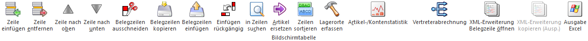
Ø Zeile einfügen
Durch Anwahl dieses Buttons kann eine neue Belegzeile eingefügt werden.
Ø Zeile entfernen
Durch Anwahl dieses Buttons können einzelne Belegzeilen gelöscht werden.
Hinweis
Wenn Kommissionierungen für eine Belegzeile schon vorgenommen wurden, so kann die Belegzeile in der Belegstufe "2 - Auftrag" nicht gelöscht werden.
Ø Zeilen nach oben / Zeile nach unten
Mittels dieser Buttons können Belegzeilen nach oben bzw. nach unten verschoben werden.
Achtung
Bei aufgeteilten Hauptartikeln mit Ausprägungen können nur die Ausprägungen innerhalb der Aufteilung verschoben werden. Ein Verschieben des Hauptartikels ist nicht möglich, da dieser immer an erster Stelle einer Aufteilungsgruppe stehen muss.
Ø Belegzeilen ausschneiden
Mit dieser Funktion können markierte Belegzeilen ausgeschnitten werden, um sie in weiterer Folge an einer anderen Stelle im Beleg einfügen zu können. Dieses funktioniert auch mit Drag & Drop, wenn Zeilen mit STRG + SHIFT + Mausklick markiert werden. Dabei werden auch alle im Hintergrund gespeicherten Informationen übertragen.
Hinweis
Folgende Punkte sind bei dem Ausschneiden zu beachten
ü Bei Makro-Artikel, Artikel mit
Textbausteinen oder Package-Artikeln wird beim Klick auf den Button bzw. beim
Ziehen mit der Maus die folgende Meldung angezeigt, welche Wahlweise mit "Ja"
oder "Nein" beantwortet werden kann:
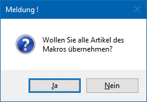
ü Bei Ausprägungsartikel reicht es, wenn nur der Hauptartikel markiert wird - in diesem Fall werden dann trotzdem alle angehängten Aufteilungen mit "verschoben".
ü Beim Verschieben bzw. Ausschneiden von Belegzeilen steht der Button "Einfügen rückgängig" nicht zur Verfügung.
ü Das Verschieben von Belegzeilen steht nur innerhalb eines Beleges zur Verfügung.
Ø Belegzeile kopieren
Durch Anwahl des Buttons "Belegzeile kopieren" werden die markierten Belegzeilen in den Zwischenspeicher gelegt und stehen für den Button "Belegzeilen einfügen" zur Verfügung.
Ø Belegzeile einfügen
Durch Anwahl des Buttons "Belegzeile einfügen" werden die zuvor kopierten Zeilen eingefügt. Hierbei sind folgende Punkte zu beachten:
ü Die Zeilen werden so eingefügt, als ob sie neu erfasst wurden, d.h. Datenfelder wie "Menge bereits geliefert", "Druckstatus", etc. werden zurückgesetzt.
ü Wenn von einem Einkaufsbeleg auf einen Verkaufsbeleg kopiert wird (oder umgekehrt), dann werden die Erlöskonten und Collis gemäß Belegart ausgetauscht.
ü Wenn von einem Einkaufsbeleg auf einen Verkaufsbeleg kopiert wird (oder umgekehrt), werden bei Artikeln mit Menge2 die Rückstandsmengen ausgetauscht, falls diese zwischen Einkauf und Verkauf unterschiedlich sind.
ü Die Preisfindung wird nicht durchgeführt.
ü Bei HSL-Artikeln werden die Stücklisten und die Komponenten so übernommen, wie sie im Quellbeleg vorhanden ist.
ü Aufgeteilte Hauptartikel werden, wenn sie zusammengeklappt sind, mit allen ihren Ausprägungen übernommen.
ü Wenn aufgeteilte Hauptartikel aufgeklappt wurden und der Hauptartikel und manche Ausprägungen markiert werden, dann werden nur diese Ausprägungen in den Zielbeleg übernommen und die Menge des Hauptartikels aktualisiert.
ü Der Button wird beim Verschieben (Tabellenbutton "Belegzeilen ausschneiden") nicht unterstützt.
Ø Einfügen rückgängig
Mit Hilfe dieses Buttons können bis zu 10 Kopiervorgänge rückgängig gemacht werden.
Ø in Zeilen suchen
Durch Anklicken des Buttons "in Zeilen suchen" kann mit Hilfe des Fensters Gehe Zu innerhalb des Belegs nach einer Zeilennummer, einer Artikelnummer oder einer Positionsnummer gesucht werden.
Ø Artikel-/Kontenstatistik
Durch Anwahl des Buttons "Artikel-/Kontenstatistik" erhält man eine Übersicht über die Verkaufs- bzw. Einkaufszahlen der letzten 5 Jahre, bezogen auf das Personenkonto des Belegs und dem Artikel der Belegzeile.
Ø Artikel ersetzen
Durch Anwahl des Buttons öffnet sich das Fenster "Ersatzartikelnummer - Auswahl", aus welchem ein Ersatzartikel gewählt werden kann. Hierdurch wird der aktuelle Artikel entsprechend ersetzt (in der Auswahl steht auch der Ursprungsartikel zur Verfügung).
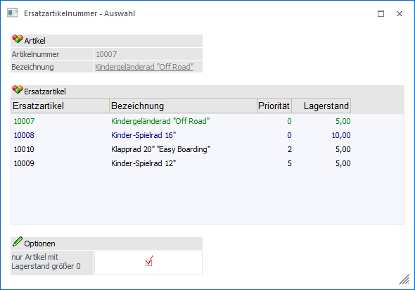
Hinweis
Wurde der Beleg bereits gerechnet oder gedruckt, werden die Menge, der Preis, die Lieferdaten und die Positionsnummer von der ursprünglichen Zeile übernommen, die anderen Artikeldaten (Erlöskonto, USt, ...) werden neu geladen. Die Ursprünglich (zuerst) eingegebene Artikelnummer wird ebenfalls immer abgespeichert und kann ggfs. mit der Variable 26/89 angedruckt werden.
Achtung
Dieser Button ist nur dann aktiv, wenn…
ü bei dem Artikel ein Ersatzartikel hinterlegt wurde (Artikelstamm - Register "Lager" - Unterregister "Einstellungen" - Feld "Ersatzartikel").
ü der Beleg noch nicht oder nur als Auftrag gerechnet bzw. gedruckt wurde. Wenn bereits eine Teillieferung erfolgt ist, ist ein Ersetzen nicht mehr möglich.
Ø Zeilen sortieren
Durch Anklicken dieses Buttons können alle Belegzeilen sortiert werden. Voraussetzung hierfür ist, dass in der Belegart ein Sortierkriterium definiert wurde (Register "Ausdruck" - Option "Sortierkriterium").
Achtung
Wird ein Beleg nach den Kriterien "1 - Artikelnummer", "2 - Lagerplatz" oder "4 - Lieferdatum" sortiert, gehen alle Textzeilen und Zwischensummen verloren, da im Beleg keine Verbindung zwischen den Textzeilen und der Artikelzeile besteht - daher kann das Programm nicht wissen, welche Texte zu welchem Artikel gehören.
Des Weiteren ist eine Sortierung der Zeilen ist nicht möglich, wenn im Beleg Packageartikel enthalten sind.
Ø Vertreterabrechnung
Wird dieser Button angeklickt, so wird das Register "Vertreter" geöffnet, in welchem die Zuordnung für die Vertreterabrechnung geändert werden kann (nähere Informationen entnehmen Sie bitte dem Kapitel Belegerfassen - Register "Vertreter").
Ø XML-Erweiterung Belegzeile öffnen
Wenn dieser Button angeklickt wird, so öffnet sich das Fenster "XML-Erweiterung", in welchem zusätzliche Informationen zu dem Beleg hinterlegt werden können. Standardmäßig wird die Erweiterung vorgeschlagen, welche in der Belegart im entsprechenden Feld "XML-Erweiterung für Belegzeilen" (Register "Optionen") hinterlegt wurde.
Ø XML-Erweiterung kopieren (Ausp.)
Dieser Button ist nur aktiv, wenn es sich bei der aktiven Zeile um einen aufgeteilten Hauptartikel handelt und beim Hauptartikel auch schon XML-Erweiterungen hinterlegt sind (Fokus muss auf dem Hauptartikel liegen). Wird der Button angeklickt erscheint die folgende Meldung:
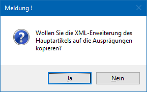
Wird die Meldung mit "Ja" bestätigt, dann werden die hinterlegten XML-Erweiterung auf alle Ausprägungen kopiert. Wird die Meldung mit "Nein" bestätigt, so werden keine XML-Erweiterungen kopiert.
Tabelle "Artikelinfo"
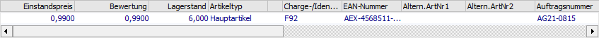
Wird ein Artikel erfasst, so werden in der Tabelle "Artikelinfo" u.a. der Einstandspreis, der Bewertungspreis und der aktuelle Lagerstand des Artikels angezeigt. Handelt es sich um einen Handelsstücklistenartikel, bei welchem das Stücklistenfenster geöffnet werden darf, so wird neben dem Artikeltyp des Icon angezeigt. Per Doppelklick auf dieses wird das Stücklistenfenster geöffnet.
Sonderbuttons - Register "Mitte"
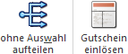
Folgende Buttons stehen nur im Register "Mitte" zur Verfügung (die Beschreibung der weiteren Buttons können dem Kapitel Belegerfassen entnommen werden):
Ø ohne Auswahl aufteilen
Bei Anwahl des Buttons "ohne Auswahl aufteilen" werden noch nicht aufgeteilte Hauptartikel mit Ausprägungen auf die Ausprägungen aufgeteilt und Artikel mit Lagerortstruktur entsprechenden Lagerorten zugewiesen.
Hinweis - nicht aufgeteilte Hauptartikel mit Ausprägungen
Die Aufteilung wird nur durchgeführt, wenn in den Aufteilungsoptionen (WinLine FAKT - Stammdaten - Ausprägungen - Aufteilungsoption) die Aufteilungsart " 1 - muss erfolgen" hinterlegt wurde (abhängig von der Belegstufe und dem Artikeltyp). Zusätzlich sind folgende Punkte zu beachten:
ü Beim Erfassen eines Lieferscheins
kann die Auftragsmenge eines Artikels mit Ausprägung automatisch auf die
vorhandenen Ausprägungen aufgeteilt werden (z.B. Verkauf Chargen; es sollen
automatisch zuerst die ältesten Chargen ausgeliefert werden).
Sollte die
Auftragsmenge dabei größer als der vorhandene Lagerstand sein, so kann in den
FAKT-Parametern (WinLine START - Parameter - Applikations-Parameter - FAKT -
Artikel - Ausprägungen - Bereich "Bei automatischer Aufteilung soll die
Restmenge") definiert werden, was mit der Restmenge passieren soll.
ü Falls ein oder mehrere Hauptartikel nicht vollständig aufgeteilt werden können, da z.B. nicht genug Chargen mit Lagerstand vorhanden sind, so wird eine Meldung ausgegeben und alle Hauptartikelzeilen, bei denen eine Teillieferung durchgeführt wurde, werden mit einem Infosymbol versehen.
ü Bei der automatischen Aufteilung wird die Ausprägungsvorgabe (Register "Zusatz", Bereich "Vorbesetzung Ausprägungen") des zugrundeliegenden Belegs berücksichtigt. Wird zusätzlich mit einer Ausprägungsvorlage gearbeitet, in welcher wiederum eine Vorbelegung vorhanden ist, so übersteuert diese die Ausprägungsvorgabe des Belegs.
Hinweis - Artikel mit Lagerortstruktur
Die Zuweisung wird nur durchgeführt, wenn in den Aufteilungsoptionen (WinLine FAKT - Stammdaten - Lagerorte - Aufteilungsoption) die Aufteilungsart " 1 - muss erfolgen" oder "2 - kann erfolgen" hinterlegt wurde (abhängig von der Belegstufe und der Lagerortstruktur). Eine detaillierte Beschreibung der Voraussetzungen bzw. Arbeitsabläufe kann dem Kapitel Belegerfassung - Register "Mitte" - Automatische Lagerortaufteilung entnommen werden.
Ø Gutschein einlösen
Durch Anwahl diese Buttons kann ein Gutschein eingelöst werden. Diese Funktion steht ab der Belegstufe "Auftrag" zur Verfügung.
Hinweis
Gutscheine werden nicht über einen gesonderten Belegzeilentyp gekennzeichnet, sondern als "3 - Text" dargestellt.
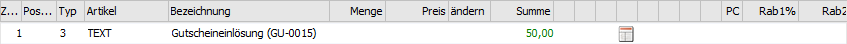